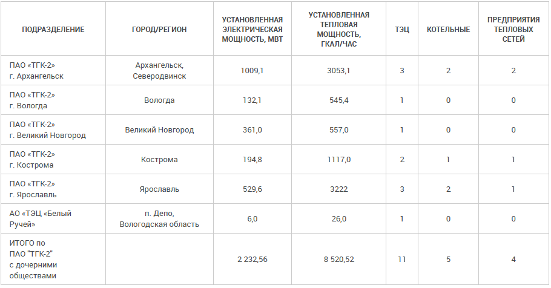
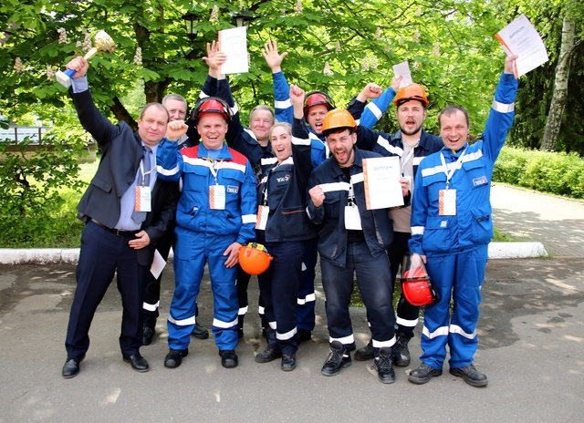
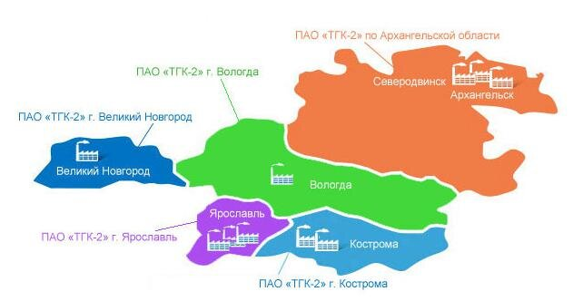

.png)
Территориальная генерирующая компания №2
Публичное акционерное общество «Территориальная генерирующая компания №2» (ПАО «ТГК-2») создано в
апреле 2005 года. ПАО «ТГК-2» является одной из крупнейших теплоэнергетических компаний Северо-Западного и
Центрального федеральных округов России. ПАО «ТГК-2» занимается производством электрической и тепловой
энергии и реализацией тепла (пара и горячей воды) потребителям. Предприятия компании расположены в
Архангельской, Вологодской, Костромской, Новгородской и Ярославской областях РФ.
2 232,56 МВт
Общая установленная электрическая мощность
8 520,52 Гкал/ч
Общая установленная тепловая мощность
Миссия ПАО «ТГК-2»
Содействие социально-экономическому развитию регионов через надежное и бесперебойное снабжение
тепловой и электрической энергией. Мы работаем на благосостояние и интересы наших акционеров,
потребителей, работников, партнеров и общества.
Производственная мощность
Производственные активы ТГК-2 включают в себя:
- 11 ТЭЦ
- 5 котельных
- 4 предприятия тепловых сетей

Инженерный коллектив компании

Карта «ТГК-2»